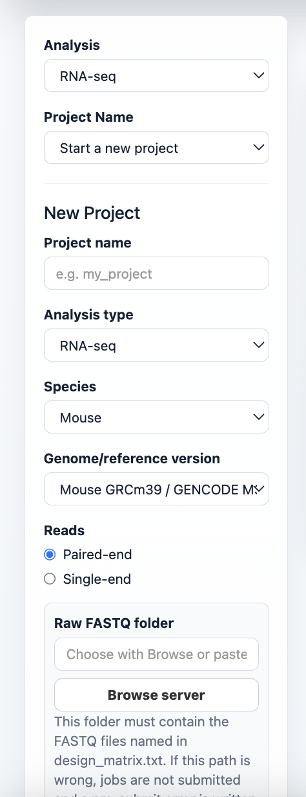
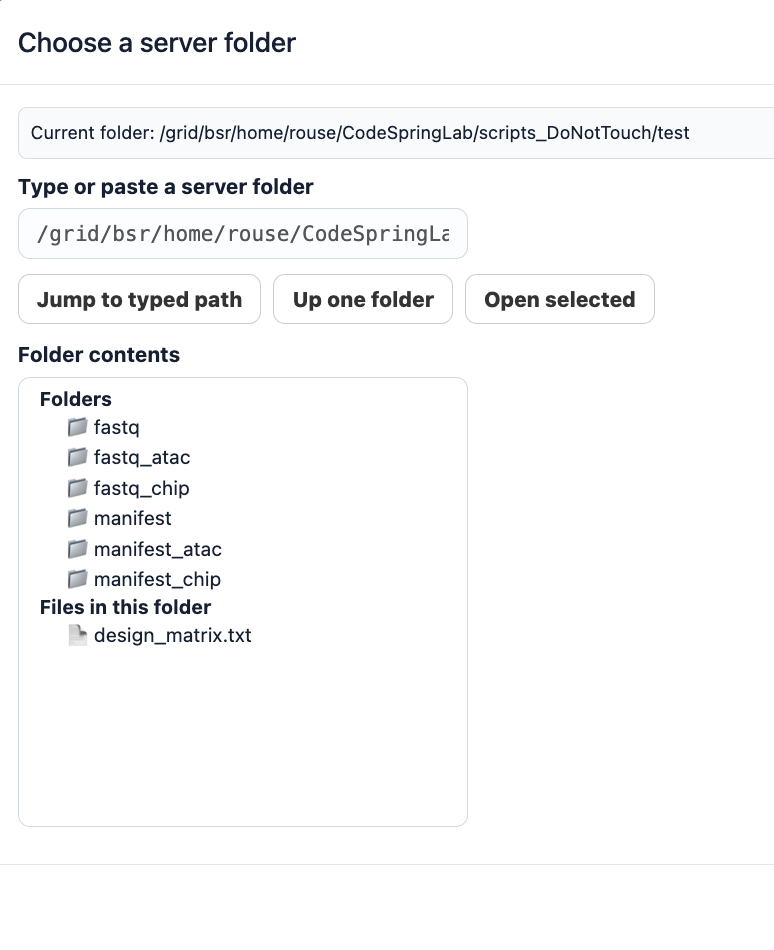
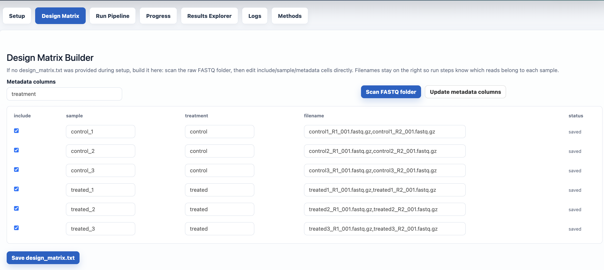
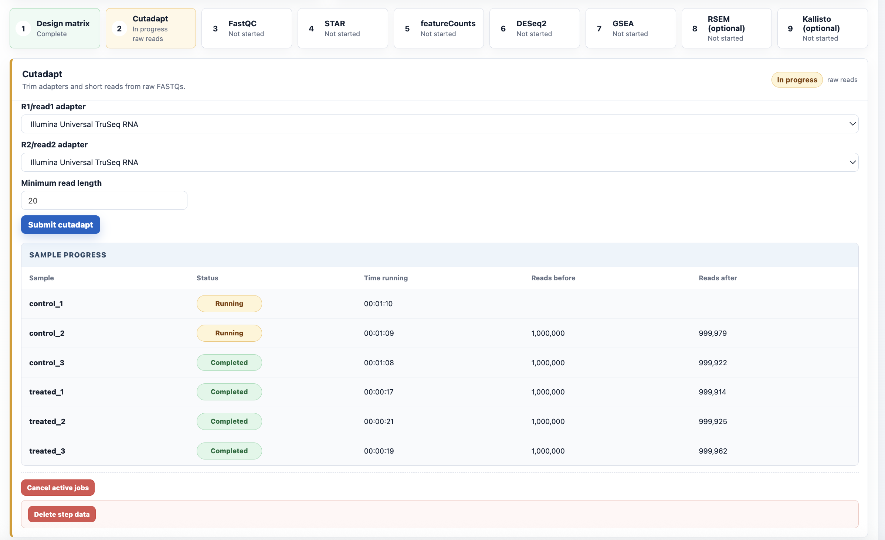
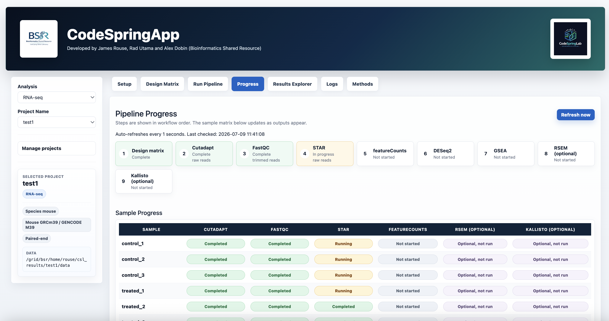
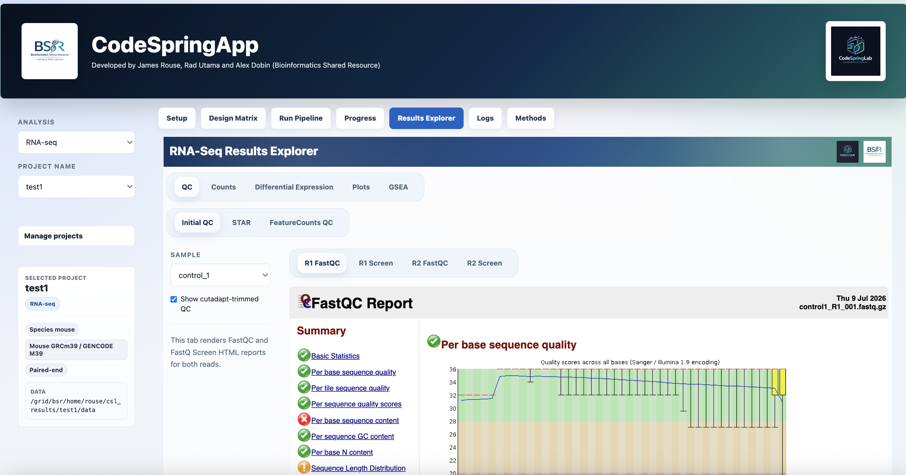
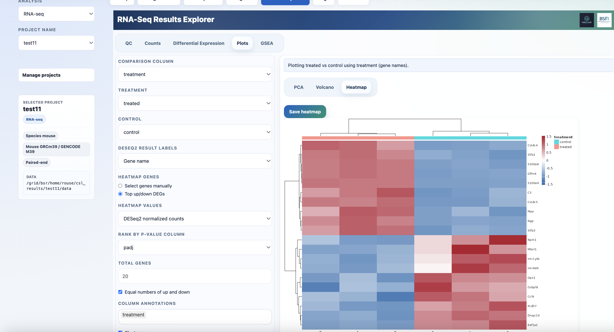
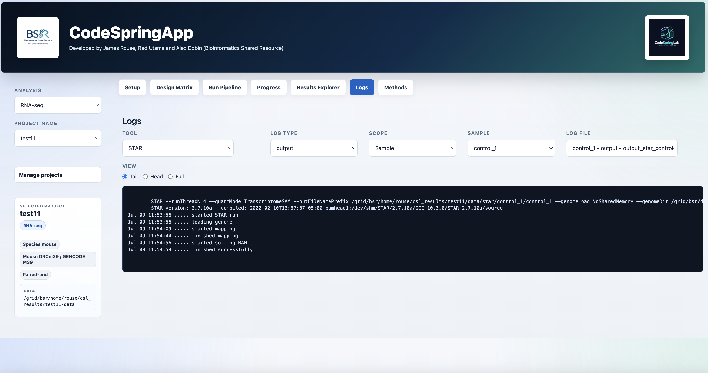

Project Setup
Select analysis type, choose projects, and review the active project.
CodeSpringApp wraps CodeSpringLab in a polished Shiny interface for project setup, design matrices, SLURM jobs, progress, logs, methods, and results visualization.

The static page is a visual tour. The real app runs on your HPC server with CodeSpringLab, project data, and reference genomes.
Select RNA-seq projects from saved configs or create a project with server-folder browsing.
Build a design matrix from FASTQs, include/exclude samples, and add comparison columns.
Run cutadapt, FastQC, STAR, featureCounts, DESeq2, GSEA, RSEM, and Kallisto through SLURM.
See running, completed, cancelled, deleted, and likely failed states per sample and step.
Use the embedded CodeSpringLab Results Explorer for QC, counts, plots, and pathway outputs.
Summarize genome references, tool versions, and step parameters for documentation.
Representative screenshots from the current Shiny interface.

Select analysis type, choose projects, and review the active project.
Pick raw FASTQ folders, result roots, and design-matrix folders without typing long paths.

Editable include/sample/metadata table generated from FASTQ filenames.

Step cards expose parameters, submit buttons, progress, cancel, and delete controls.

Color-coded workflow and sample-by-step status matrix.

FastQC, count matrices, DESeq2 plots, heatmaps, and GSEA outputs in one app.

Customize and save heatmaps, volcano plots, PCA, and pathway outputs.

Inspect project logs by tool, sample/run, and output/error type.
Start the app on the server, then open an SSH tunnel from your laptop.
cd ~/CodeSpringApp
./run_codespringweb.sh 8601
ssh -N -L 8601:localhost:8601 $USER@bamdev1